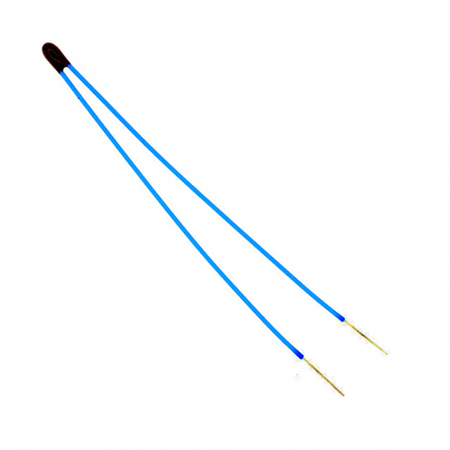
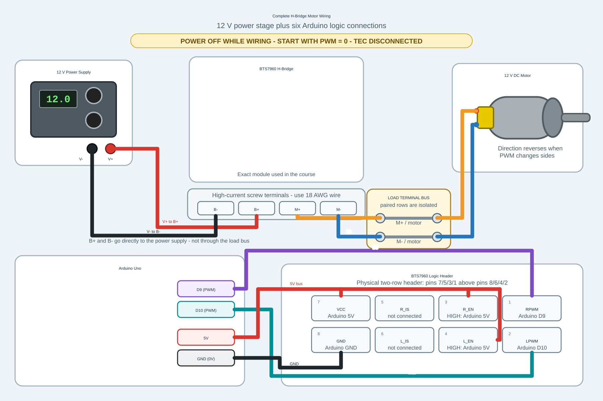

Module 2 Assignment: First Real Instrument Pieces¶
Purpose¶
In Module 1 you used the Arduino for digital output, analog input, averaging, and LED PWM. In Module 2, you reuse those ideas to begin building a real instrument: thermistor temperature measurement, Arduino Serial Plotter output, and trim-pot-controlled PWM signals for the H-bridge.
Module 2 was taught during Session S5 on Monday, September 14.
The actuator side also begins, but cautiously. You will verify H-bridge logic and PWM with the oscilloscope before connecting a DC motor. The TEC remains disconnected throughout Module 2.
Theme¶
First Real Instrument Pieces
Thermistor serial data, temperature conversion, Arduino Serial Plotter output, H-bridge logic/PWM verification, and a low-power DC motor direction and speed test after the instrument passes the safety checks.
Safety Boundary¶
The thermistor circuit is safe to build and test from Arduino USB power.
The TEC remains disconnected throughout Module 2. External actuator power remains off until the H-bridge input signals have been checked with the oscilloscope. For the motor test, stop immediately if the motor, H-bridge, or wiring becomes unexpectedly warm.
Motor connection warning: Never connect the motor directly to Arduino PWM
pins 9 or 10. These pins provide low-current logic commands to the H-bridge;
they do not provide motor power. Connect the motor only to H-bridge outputs
M+ and M- as shown in the wiring diagram.
Oscilloscope ground warning: Connect every oscilloscope probe ground clip
to Arduino GND. Never connect a scope ground clip to H-bridge output M+
or M-. The H-bridge drives both motor terminals; grounding either output
through the oscilloscope can short the output and damage the apparatus.
☠
Before Class¶
- Review your Module 1 assignment notes, especially AnalogReadSerial, averaging, LED brightness, PWM, and oscilloscope duty-cycle measurements. Also review Analog, ADC, And PWM for voltage dividers, ADC counts, averaging, and PWM waveforms. The official Arduino references for AnalogReadSerial, analogRead, analogWrite, and map will also be useful.
- Read the hardware page sections on the thermistor, H-bridge, and TEC.
- Bring the Arduino, thermistor divider parts, trim pot, USB cable, and your Module 1 notes.
Outside-Class Workload Budget¶
| Session | Work | Planned time |
|---|---|---|
| S5 | Read this assignment and inspect the thermistor diagram | 30 minutes |
| S5 | Arduino tutorial, hardware references, and thermistor data-sheet reading | 45 minutes |
| S5 | Answer the four pre-class questions | 45 minutes |
| S5 | Review and finish the thermistor/PWM sketches needed in class | 60 minutes |
| S5 | Label, commit, and push the C2 evidence after class | 30 minutes |
| S5 | Total associated with S5 | 3 hours 30 minutes |
The time includes reading the assignment itself. If hardware access or a software problem would push the work beyond four hours for a session, document the blocker and bring it to class.
Pre-Class Questions¶
- A 100 kΩ fixed resistor and a 100 kΩ thermistor form a voltage divider, wired as described in Part 1: Thermistor Serial Data (below). What voltage do you expect at 15 °C, at 25 °C, and at 35 °C? You need the thermistor data sheet to answer.
- Why is a temperature reading more model-dependent than a voltage reading?
- Describe the H-bridge input signals you expect for each case: PWM = 0, low-power heat, and low-power cool. Which of the two Arduino pins should carry the PWM signal in each case, and what should the other direction pin do?
- What is one advantage of Arduino Serial Plotter compared with Arduino Serial Monitor?
What You Will Do¶
- Build or inspect a thermistor voltage divider.
- Write and upload a thermistor serial sketch.
- Convert ADC counts into voltage, resistance, and temperature.
- Revise the sketch so Arduino Serial Plotter shows temperature versus serial read order.
- Use a trim-pot voltage as a manual input that sets PWM.
- Use a separate digital input or switch to choose heat versus cool.
- Verify H-bridge direction and PWM logic on the oscilloscope.
- View the H-bridge
M+andM-output waveforms with the oscilloscope. - Test DC motor speed and direction at low PWM after the instructor checks the H-bridge signals.
Part 1: Thermistor Serial Data And Temperature Conversion¶
Prepare The Thermistor For The Breadboard¶
The TDK/EPCOS thermistor has very thin 30 AWG factory leads. These leads are too thin to make reliable contact with a solderless breadboard, which is designed for thicker solid wire. Do not plug the thermistor's 30 AWG leads directly into the breadboard.
First check your small equipment box for a thermistor that has already been prepared with 22 AWG solid-wire breadboard ends. If none is present, tell the instructor and prepare one before building the voltage divider:
- Solder a 22 AWG solid wire to each 30 AWG thermistor lead.
- Insulate each solder joint separately with heat-shrink tubing so the two conductors cannot touch.
- Leave a short, straight 22 AWG solid-wire end exposed for insertion into the breadboard.
- Gently tug-test and visually inspect both joints before use.


The photograph shows one acceptable assembly in which stranded extension wire was first soldered to the thermistor and solid wire was then added at the breadboard end. That intermediate stranded section is not required. It is also acceptable, and simpler, to solder 22 AWG solid wire directly to each thermistor lead and insulate the two joints.
Wire the thermistor divider:
- Arduino
5Vto fixed resistor. - Fixed resistor to Arduino
A0. - Arduino
A0to thermistor. - Thermistor to Arduino
GND.

Open the thermistor-divider diagram full size
Write a sketch that prints human-readable measurements in Serial Monitor. A good output line looks like this:
time = 1.50 s average ADC = 511.8 voltage = 2.501 V resistance = 100.23 kΩ temperature = 24.9 °C samples = 1000
Every number should have a label and a unit where appropriate. The goal is for a person looking at Serial Monitor to understand the measurement without memorizing a column order.
From this point forward in the course, every measured temperature must use the
same acquisition sequence: take 1000 raw ADC readings with
analogRead(A0), average those readings, convert the average ADC value to one
average voltage, and only then calculate thermistor resistance and temperature.
Do not calculate a temperature from each raw ADC reading and then average the
temperatures.
Averaging 1000 readings reduces random measurement noise, but it also takes time and therefore acts as a low-pass filter: rapid changes can be smoothed or delayed. An Arduino Uno takes roughly 0.1 s to acquire 1000 analog readings, so the update remains fast enough for the slowly changing thermistor temperature in this module.
Write your own sketch for this measurement. You may ask an AI agent for help, but do not simply upload code that you do not understand. You should be able to explain every calculation and every printed value.
What Your Sketch Should Do¶
Include these functions in your sketch. Build and test them one at a time.
- Constants at the top describe the circuit and thermistor model: Arduino pin
A0, the 5 V reference, the 100 kΩ fixed resistor, the 100 kΩ thermistor value at 25 °C, the beta value, and a sample count of1000. averageAdcSamples()readsA01000 times and returns the average ADC value.adcToVoltage()converts the average ADC value into an average voltage.voltageToResistance()uses the voltage-divider equation to calculate the thermistor resistance.resistanceToCelsius()uses the beta model to convert thermistor resistance into temperature.setup()starts Serial Monitor at9600baud and prints a short heading.loop()waits until it is time for a new report, averages 1000 raw readings fromA0, then calculates voltage, resistance, and temperature in that order and prints one labeled line.printHumanReadable()controls the exact text you see in Serial Monitor. If you want the output to look different, this is the safest first place to edit.
Hold the thermistor firmly between your index finger and thumb to heat it. Slightly moisten the thermistor to cool it. The reported temperature should move slowly and plausibly. If it jumps wildly, check the wiring, ground, and serial parsing before changing the code. Show the instructor when this works or if you are stuck.
Part 2: Serial Plotter Output¶
Revise the sketch so each serial line contains only one temperature value. For example:
24.9
25.0
25.2
This format is less friendly for a person reading one line, but it is exactly what Arduino Serial Plotter needs. The plotter will draw temperature versus serial read order, not temperature versus a time value that you provide. Open Serial Plotter and confirm that the graph responds when you hold the thermistor between your fingers or cool it with a slightly moistened finger.
Record:
- the code change you made so each serial line contains only temperature,
- a screenshot or sketch of the Serial Plotter trace,
- whether warming and cooling the thermistor move the plotted temperature in the expected direction.
Module 2 stays inside the Arduino IDE. Quickly show the instructor when the serial plotter displays the temperature.
Part 3: Trim Pot PWM, H-Bridge Verification, And Motor Direction¶
3A: Build And Verify The Trim-Pot H-Bridge Controller¶
In Module 1, a trim pot produced a variable voltage and the Arduino converted that voltage to an ADC number. Now use the same idea as a manual control input.
Get a 100 kΩ trim pot, wire it up, and build code with this signal path:
trim-pot voltage -> analogRead average -> map to PWM -> analogWrite -> H-bridge input

Figure 3. Wiring for the PWM and direction commands. The 100 kΩ potentiometer
wiper connects to analog input A1 and sets PWM magnitude. Connect one end of a wire to digital input pin 11. Use the other end to
connect pin 11 to Arduino 5V for heat/clockwise or Arduino GND for
cool/counterclockwise. Arduino PWM output pins 9 and 10 connect to the two
H-bridge control inputs.
Use one analog input for the trim pot, for example A1. The analog input has
10-bit resolution and therefore produces numbers from 0 to 1023. Convert
the averaged trim-pot reading into a PWM output signal. PWM outputs have 8-bit
resolution and therefore values from 0 to 255 are used to control them.
Use a separate digital pin as a heat/cool or direction input, for example pin 11:
Arduino pin 11 |
Mode | Arduino pin 9 |
Arduino pin 10 |
|---|---|---|---|
5V |
heat / clockwise | PWM | 0V |
0V |
cool / counterclockwise | 0V |
PWM |
This is the logic of H-bridge method 2, highlighted in yellow in the H-bridge hardware notes note. The two H-bridge control inputs receive
either the PWM command or 0V, depending on whether you want to heat or cool.
In the motor demonstration in Module 2, heat means clockwise and cool means
counterclockwise.
Read the H-bridge hardware notes before wiring
the class board.
Keep actuator power off and the TEC disconnected for this part. You are verifying the command signals, not driving a load yet.
Use the oscilloscope to inspect the Arduino pins that drive the H-bridge. On the class boards, the PWM pins are expected to be Arduino pins 9 and 10. Verify the actual board wiring before powering anything.
Check:
- which pin is active in heat/clockwise mode,
- which pin is active in cool/counterclockwise mode,
- whether the inactive side stays off,
- whether the PWM duty cycle matches the commanded value,
- whether Arduino ground and oscilloscope ground are common.
Show the working command signals to the instructor before connecting a load.
3B: Connect And Drive The DC Motor¶
Only do this after the instructor checks the H-bridge signals. The TEC must
remain disconnected. Do not connect either motor lead directly to an Arduino
PWM pin. Arduino pins 9 and 10 control the H-bridge; H-bridge outputs M+
and M- power the motor.
Before connecting the TEC in a later module, use a small motor as the first visible H-bridge load. The motor makes direction reversal and PWM speed control easy to observe without immediately applying power to the thermal system.
Complete wiring, including the six Arduino logic connections:

Open the complete Arduino, H-bridge, power-supply, and motor wiring diagram full size
{kind=link}
Arduino pin 9 connects to RPWM, and pin 10 connects to LPWM. Connect
R_EN, L_EN, and logic VCC to Arduino 5V; connect logic GND to Arduino
GND (0 V). Leave the R_IS and L_IS current-sense outputs unconnected.
Oscilloscope warning: Every scope ground clip must connect to Arduino
GND. Never connect a scope ground clip to M+ or M-; both are driven
H-bridge outputs, not ground points.
Before measuring, predict the output waveforms. With each probe referenced to
Arduino GND, expect the behavior below. For a conceptual explanation of how
four switches reverse the voltage across a load, see the
Wikipedia H-bridge article.
Pin 11 |
Direction | Expected M+ |
Expected M- |
|---|---|---|---|
5V |
heat / clockwise | PWM between approximately 0 V and the actuator-supply voltage | approximately 0 V |
0V |
cool / counterclockwise | approximately 0 V | PWM between approximately 0 V and the actuator-supply voltage |
The measured levels and waveform edges may differ slightly from this idealized prediction when the motor is connected.
- Turn off the actuator power supply and confirm that the TEC and thermal switch are disconnected from the H-bridge output.
- Inspect the prepared motor leads and terminal-bus connections. Use two
isolated paired positions on the terminal bus to connect the motor leads to
H-bridge
M+andM-. Each motor lead and its corresponding H-bridge lead terminate on the same paired position. The power-supplyV+/V-leads connect directly to H-bridgeB+/B-and do not go through this bus. - Securely attach a short piece of masking tape to the motor shaft so that it forms a visible flag perpendicular to the rotation axis. Make sure the flag can rotate freely without striking the wiring or apparatus.
- Set PWM to zero. Have the instructor check the wiring, oscilloscope ground connection, and current limit, and then turn on actuator power.
- Vary the PWM command over the full range. Use the tape flag to observe how
motor speed changes, and observe the corresponding
M+andM-waveforms on the oscilloscope. Remember, scope ground is tied to ArduinoGND. Switch between heat/clockwise and cool/counterclockwise by moving the input to pin 11 from 5V to 0V. Record the motor direction, relative speed, and what changes on each H-bridge output. - Show the instructor the scope output on the H-bridge and the operation of the motor.
- Return PWM to zero and turn off actuator power before removing the motor.
For the demonstration in Module 2, the heat command should turn the motor clockwise and the cool command should turn it counterclockwise.
C2 Evidence And Submission¶
Module 2 produces most of the evidence for
C2, Measurement And Actuator Electronics.
Do not plan to recreate oscilloscope measurements after the apparatus has been
dismantled. Before leaving S5, save one concise module note containing:
- The labeled thermistor-divider diagram and thermistor constants.
- Three representative human-readable serial lines.
- The conversion chain from averaged ADC count to temperature.
- A Serial Plotter screenshot or sketch showing warming and cooling.
- A trim-pot-to-PWM code excerpt or signal-path explanation.
- The completed H-bridge signal table for heat/clockwise and cool/counterclockwise commands.
- Oscilloscope evidence for both active Arduino PWM pins, including voltage, frequency, and duty cycle.
- A short comparison of the
M+andM-waveforms in both motor directions, including where the probe ground clips were connected. - A short record of motor direction and the observed PWM speed response.
Put the evidence in docs/module_notes/module_02_instrument_pieces.md and put
the authoritative sketch in a descriptively named folder under arduino/.
Use links to code files rather than pasting a complete sketch into the note.
There is no separate A# submission for Module 2. This note and its cited Git
checkpoint are evidence for C2, demonstrated during S6 on Wednesday,
September 16. One team member must submit the C2 Team Checkoff Moodle receipt
by 5:00 PM. Follow the C2 rubric and oral-question
bank.
Reserve no more than 30 minutes after S5 to label the saved evidence, update the note, commit, and push. The physical measurements themselves must be made in class.
C2 Oral Questions¶
Use your apparatus and circuit sketches to prepare these questions. Label Arduino inputs and outputs and identify the sensor and actuator. Each student answers one primary question and, when useful, one brief follow-up; do not prepare a separate written answer to every question.
- How do you measure temperature with a thermistor? Explain qualitatively how
temperature-dependent resistance becomes a voltage and then a digital ADC
number. Draw the divider with
5V, the fixed resistor, thermistor,A0, andGND. Identify the thermistor as a sensor andA0as an Arduino input, then derive the resistance-versus-divider-voltage equation. - For our NTC thermistor, how does resistance change as temperature rises?
Explain the microscopic mechanism in terms of mobile charge carriers, and
contrast it with an ordinary metal resistor. For your divider orientation,
does warming raise or lower the voltage at
A0, and why? - How does turning the potentiometer change motor speed? Draw and trace the
path from its continuous voltage at
A1, through ADC conversion and PWM mapping, to outputs9/10, the H-bridge, and motor. Identify command inputs and actuator outputs. Why is the potentiometer an input rather than an actuator? What supplies the motor's power? - Why does the motor rotate smoothly rather than visibly following every PWM pulse? Explain the role of average applied voltage, motor inductance in smoothing current, and mechanical inertia in smoothing speed. Does inertia make the electrical PWM waveform itself continuous?
- For the two direction settings and zero output, what signals should appear on the H-bridge PWM inputs? Point to a scope trace and explain its frequency, duty cycle, high/low voltages, and physical meaning. Where must the scope ground clips connect, and why?